High-dimensional geometry of population responses in visual cortex
Neural population activity in response to natural images is high-dimensional, and the activity correlations obey a power law of 1/n.
Abstract
A neuronal population encodes information most efficiently when its stimulus responses are high-dimensional and uncorrelated, and most robustly when they are lower-dimensional and correlated. Here we analysed the dimensionality of the encoding of natural images by large populations of neurons in the visual cortex of awake mice. The evoked population activity was high-dimensional, and correlations obeyed an unexpected power law: the nth principal component variance scaled as 1/n. This scaling was not inherited from the power law spectrum of natural images, because it persisted after stimulus whitening. We proved mathematically that if the variance spectrum was to decay more slowly then the population code could not be smooth, allowing small changes in input to dominate population activity. The theory also predicts larger power-law exponents for lower-dimensional stimulus ensembles, which we validated experimentally. These results suggest that coding smoothness may represent a fundamental constraint that determines correlations in neural population codes.
A picture is worth a thousand words, and your brain needs billions of neurons to process it. Why do we need so many neurons? To find out, we recorded thousands of them in mouse visual cortex.
One reason to have so many neurons may be that they each have different jobs:
Neuron A recognizes the pointedness of a fox’s ears,
Neuron B recognizes the color of the fox’s fur.
Neuron C recognizes a fox nose,
etc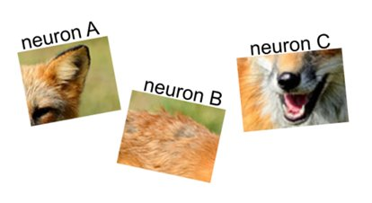
When enough of these neurons activate, the brain as a whole can recognize a fox.
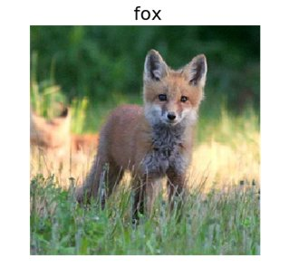
What if some neurons “fall asleep” on the job and don’t respond to the image? This actually happens very often, and yet the brain is remarkably robust to these failures.
Even if 90% of the neurons don’t do their job, we can still recognize the fox. Even if we randomly change 90% of the pixels, we can still recognize the fox. The brain is robust to a lot of manipulations like that.
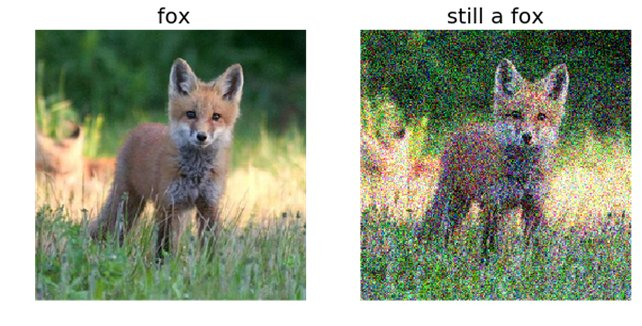
Artificial neural networks also use millions of neurons to recognize images.
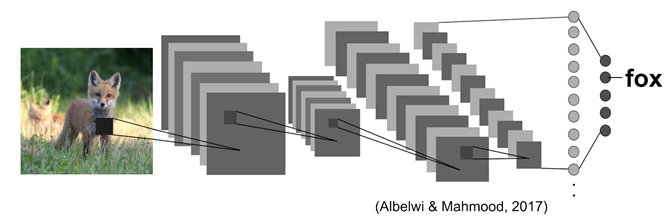
Unlike brains, machines are not so robust to small aberrations. Here is our fox and next to it the same fox very slightly modified and now the machine thinks it’s a puffer fish!
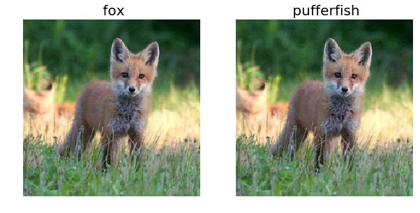
These are called “adversarial images”, because we devised them to fool the machine. How does the brain protect against these perturbations and others?
One protection could be to make many slightly different copies of the neurons that represent foxes. Even if some neurons fall asleep on the job, their copies might still activate.
However, if the brain used so many neurons for every single image, we would quickly run out of neurons!
This results in an evolutionary pressure: it’s good to have many neurons do very different jobs so we can recognize lots of objects in images, but it’s also good if they share some responsibilities, so they can pick up the slack when necessary.
We found evidence for this by investigating the main dimensions of variation in the responses of 10,000 neurons. Below, each column is one neuron’s responses to several of our images.
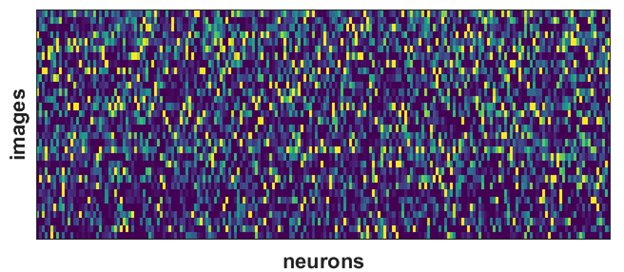
The largest two dimensions were distributed broadly across all neurons, as you see below. Any neuron could contribute to these and pick up the slack if the other neurons did not respond.
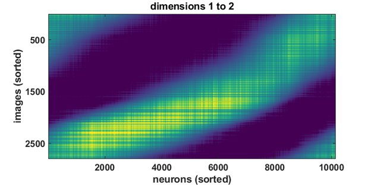
The next 8 dimensions each were smaller and distributed more sparsely across neurons. If a neuron was asleep, it was still likely a few others could represent these dimensions in its place.
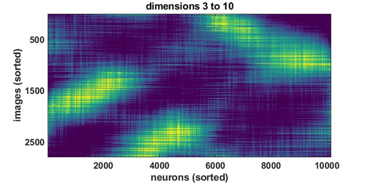
The next 30 dimensions revealed ever more intricate structure…
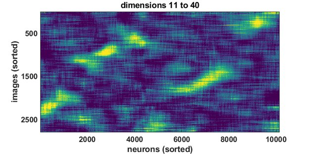
And so did the next 160 dimensions…
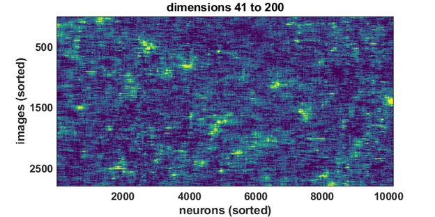
And so on, this kept on going, with the N-th dimension being about N times smaller than the biggest dimension.
This distribution of activity is called a “power-law”.
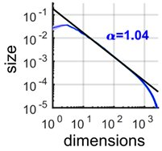
However, this was not just any power-law, it had a special exponent of approx 1. We did some math and showed that a power-law with this exponent must be borderline fractal.
A fractal is a mathematical object that has structure at many different spatial scales, like the Mandelbrot set below:
This Inceptionism movie is also a kind of fractal:
The neural activity was so close to being a fractal, and just barely avoided it because it’s exponent was 1.04, not 1 or smaller.
An exponent of 1.04 is the sweet spot: as high-dimensional as possible without being a fractal.
Not being a fractal allows neural responses to be continuous and smooth, which are the minimal protections neurons need so that we don’t confuse a fox with a puffer fish!
We shared the data, and the code to run the analyses. End of story, for now.
data: (figshare)
code: (github.com/MouseLand/stringer-pachitariu-et-al-2018b)